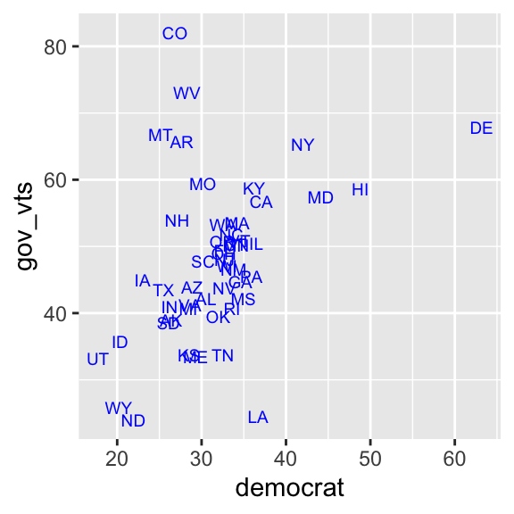
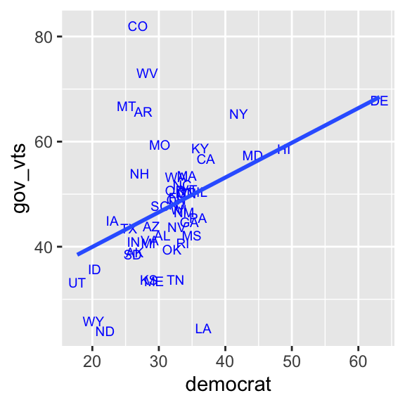
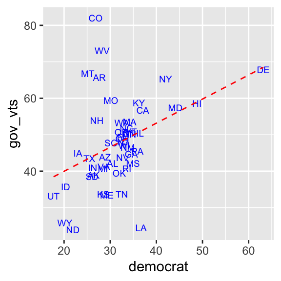
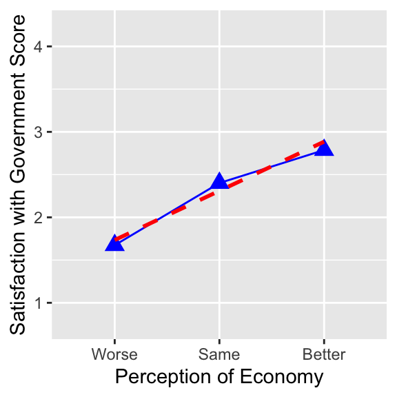
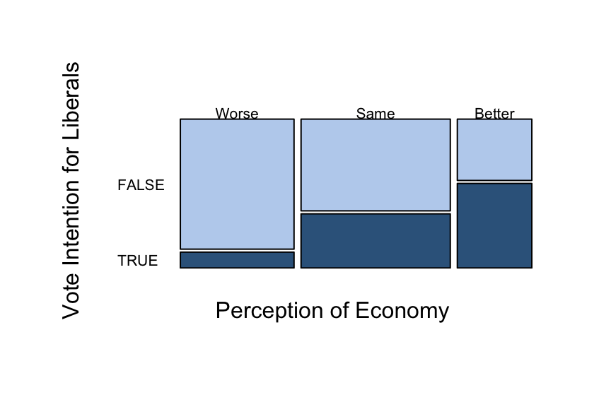
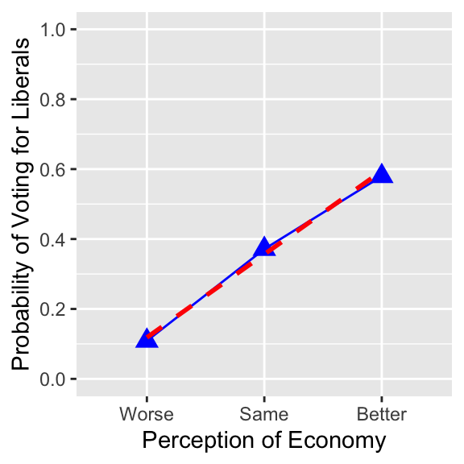

library(tidyverse)6 Simple Linear Regression
Before you start working on this chapter, you need to do the following. If you need a help for each step, see Section 3.1.
Launch RStudio.
Load
POL232.RDatainto your current R session.Prepare an R Script to save all your work in this chapter. I suggest you name it “
POL232_Week#_YourLastName.R” or “POL232_Tutorial#_YourLastName.R” in which#is the number of the current week or tutorial session.You also need to load
tidyversepackage into your current R session (Section 1.4.2).
I suggest you actually write the R functions used below in your R script instead of copying and pasting them. See Section 3.1.5 for why.
I also suggest you sufficiently annotate your R script (i.e. leaving notes after the
#sign) so that you can use your R script as your reference when you work on tutorial exercises or data analysis paper assignments. In other words, this R script will be your notes for this chapter.
6.1 Linear Regression for Bivariate Analysis
6.1.1 Simple Linear Regression
In this chapter, we will estimate a simple linear regression model with only one independent variable. In other words, we examine a bivariate relationship between a dependent variable and an independent variable using linear regression.
In R, we use the lm() function to estimate a linear regression model. At minimum, the lm() function takes two arguments. A basic syntax of the lm() function in this case is as follows.
lm(formula = dependent_variable ~ independent_variable, data = data_frame_used)The first argument of the lm() function is the formula argument. We specify our linear regression model in this argument. Suppose the model we try to estimate is given by the following formula. \[
Y = \alpha + \beta X + u
\tag{6.1}\]
Then, we specify the formula argument in the lm function as formula = Y ~ X. That is, ignoring the coefficients, \(\alpha\) and \(\beta\), we write the dependent variable Y on the left-hand side of tilde, ~, and the independent variable X on the right-hand side.
The second argument of the lm() function is the data argument in which we specify the name of the data frame we are using.
Let’s estimate a linear regression using the usstates2010 data frame, in which the dependent variable is ranney3_gub_prop and the independent variable is democrat. As we saw in Section 5.3, democrat is the percent of Democratic identifiers — individuals who identify themselves as Democrats — in each state, and ranney3_gub_prop is the proportion of two-party vote for a democratic gubernatorial candidate. We would expect a positive relationship between these two variables.
lm(formula = ranney3_gub_prop ~ democrat, data = usstates2010)
Call:
lm(formula = ranney3_gub_prop ~ democrat, data = usstates2010)
Coefficients:
(Intercept) democrat
0.267577 0.006604 At the bottom of the output, we can see the list of coefficients estimated. The number below (Intercept) is the intercept of the linear regression model. This is an estimate of \(\alpha\) in the linear regression model in Equation 6.1. The number below democrat is the coefficient of the democrat variable. This is an estimate of \(\beta\) in the linear regression model in Equation 6.1.
Recall that ranney3_gub_prop is measured in proportion, a number between 0 and 1, and democrat is measured in percentage, a number between 0 and 100. We can check this by the summary() function.
summary(usstates2010$ranney3_gub_prop) Min. 1st Qu. Median Mean 3rd Qu. Max. NA's
0.2402 0.4071 0.4708 0.4776 0.5355 0.8209 2 summary(usstates2010$democrat) Min. 1st Qu. Median Mean 3rd Qu. Max.
17.73 27.39 32.52 31.79 34.37 63.20 It is better to measure them in the same unit. Let’s create a new variable for the two-party vote share of a democratic gubernatorial candidate measured in percentage. Below I create a new variable called gov_vts by using the mutate() function and multiplying ranney3_gub_prop by 100.
usstates2010 <- mutate(usstates2010, gov_vts = ranney3_gub_prop * 100)Then, re-estimate the above linear regression model using this new variable.
lm(formula = gov_vts ~ democrat, data = usstates2010)
Call:
lm(formula = gov_vts ~ democrat, data = usstates2010)
Coefficients:
(Intercept) democrat
26.7577 0.6604 The coefficient on democrat is 0.66. According to this model, a one percentage-point increase in the Democratic identifiers would lead to, on average, a 0.66 percentage-point increase in the two party vote share of a Democratic gubernatorial candidate.
6.1.2 Scatterplot with Linear Regression Line
In Section 5.3, we drew a scatterplot of the percentage of Democratic identifiers and the Democratic gubernatorial candidate’s vote share. Let’s add a linear regression line to this scatterplot.
First, let’s redraw the scatterplot.
ggplot( usstates2010,
aes( x = democrat, y = gov_vts, label = st ) ) +
geom_text( size = 2.5, col = "blue" ) 
To draw a linear regression line, we add the geom_smooth() function with the arguments specified below to our scatterplot.
ggplot( usstates2010,
aes( x = democrat, y = gov_vts, label = st ) ) +
geom_text( size = 2.5, col = "blue" ) + # Add geom_smooth() with two arguments,
geom_smooth( method = "lm", se = FALSE) # method = "lm" and se = FALSE.
The geom_smooth() function draws a “smoothed” line for the conditional means of y over the values of x in various methods. As we want to draw a linear regression line, we should specify the method argument to lm, which is the function name for a linear regression model in R. If we don’t set the se argument to FALSE, the geom_smooth() function also draws a confidence interval, which is one of the methods of statistical inference. You will learn about confidence intervals later in the semester. As you haven’t learned it yet, let’s set it aside for now.
You can also edit the appearance of a linear regression line by specifying the arguments in the geom_smooth() function. Below I used the col (or color or colour) argument to specify color of the line, linetype to set type of the line, and size to change line width. You can find different line types used in R online, for example here. Recall that you can also look up names of colors used in R online, for example, here and here.
ggplot( usstates2010,
aes( x = democrat, y = gov_vts, label = st ) ) +
geom_text( size = 2.5, col = "blue" ) +
geom_smooth( method = "lm", se = FALSE, # Add the col, linetype, and size arguments.
col = "red", linetype = "dashed", size = 0.5) 
6.2 Ordinal Categorical Variable in Simple Linear Regression
6.2.1 Use Ordinal Categorical Variable As Independent Variable
Next we use the ces2019 data frame and estimate a linear regression of trudeau_therm_cps on percep_economy_cps. Note that we say that we estimate (or fit) a linear regression of Y on X or we regress Y on X when Y is a dependent variable and X is an independent variable in our linear regression model.
Recall that percep_economy_cps is an ordinal categorical variable. We cannot use this variable as it is in a linear regression model, because both dependent and independent variables in a linear regression model must be numbers. To estimate a linear regression of trudeau_therm_cps on percep_economy_cps, we first need to assign numbers to each category of percep_economy_cps. Since percep_economy_cps is an ordinal variable, it makes sense to assign numbers corresponding to the order of the categories. As an ordinal categorical variable is stored as a factor in R, we need to transform this variable to a numeric variable.
As we saw before in Section 4.3.3, we can transform a factor to a numeric by the as.numeric() function, which preserves the order of levels() (= categories) assigned to a factor variable.
Let’s create percep_economy_cps_n as we did before.
ces2019 <- mutate(ces2019,
percep_economy_cps = fct_relevel(percep_economy_cps,
"(2) Worse", "(3) About the same", "(1) Better") )
ces2019 <- mutate(ces2019,
percep_economy_cps = fct_recode(percep_economy_cps,
"Worse" = "(2) Worse",
"Same" = "(3) About the same",
"Better" = "(1) Better") )
ces2019 <- mutate(ces2019,
percep_economy_cps_n = as.numeric(percep_economy_cps))Let’s use the head() function to list the values of the first few observations for percep_economy_cps and percep_economy_cps_n to check how the variable was transformed.
head(ces2019$percep_economy_cps)[1] Worse Same Better Same Better Worse
Levels: Worse Same Better head(ces2019$percep_economy_cps_n)[1] 1 2 3 2 3 1As you can see in these first few observations, percep_economy_cps_n = 1 if percep_economy_cps is “Worse,” percep_economy_cps_n = 2 if percep_economy_cps is “Same,” and percep_economy_cps_n = 3 if percep_economy_cps is “Better.”
As it is transformed into a numeric variable with a proper order, we can use percep_economy_cps_n as the independent variable in our linear regression model.
lm(formula = trudeau_therm_cps ~ percep_economy_cps_n, data = ces2019)
Call:
lm(formula = trudeau_therm_cps ~ percep_economy_cps_n, data = ces2019)
Coefficients:
(Intercept) percep_economy_cps_n
8.128 18.982 As you might have noticed, the values of percep_economy_cps_n are different from the numbers assigned to percep_economy_cps in my lecture. In the lecture, -1, 0, and 1 are used, but 1, 2, and 3 are assigned to percep_economy_cps_n above. As long as consecutive numbers are assigned, the coefficient of percep_economy_cps_n remains the same, although the intercept will be different.
You might have also noticed that the coefficient of percep_economy_cps_n produced above is slightly different from the coefficient of the perception of economy variable shown in my lecture. This is because there is a slight difference in the observations included in the analysis above and that presented in my lecture.
By the way, the lm() function can still accommodate an ordinal categorical variable, stored as factor, on the right hand side of a linear regression model even without transforming it into a numeric variable. The result, however, will be different from what’s reported above. We will see this in later chapters.
6.2.2 Use Ordinal Categorical Variable As Dependent Variable
Now let’s consider a linear regression model of satisfied_fedgovt on percep_economy_cps_n. Recall that satisfied_fedgovt is also an ordinal categorical variable. So in this application, we use an ordinal categorical variable as the dependent variable for a linear regression model. Again, we need to assign consecutive numbers to the categories of an ordinal categorical variable.
First, construct a numeric version of satisfied_fedgovt. Below I call this new variable satisfied_fedgovt_n.
ces2019 <- mutate(ces2019,
satisfied_fedgovt = fct_recode(satisfied_fedgovt,
"Not At All" = "(4) Not satisfied at all",
"Not Very" = "(3) Not very satisfied",
"Fairly" = "(2) Fairly satisfied",
"Very" = "(1) Very satisfied") )
ces2019 <- mutate(ces2019,
satisfied_fedgovt = fct_relevel(satisfied_fedgovt,
"Not At All", "Not Very", "Fairly", "Very"))
ces2019 <- mutate(ces2019,
satisfied_fedgovt_n = as.numeric(satisfied_fedgovt))Let’s use the head() function to check how the variable was transformed. If you specify a number in the second argument of the head() function, then R will display this number of observations for the variable you specified. Below I set this argument to 20, so that the first 20 observations of satisfied_fedgovt are displayed.
# The second argument of the head() function specifies
head(ces2019$satisfied_fedgovt, 20) # the number of observations to be displayed. [1] Fairly Fairly Fairly Fairly Not At All Not At All
[7] Not At All Fairly Not Very Fairly Not Very Not Very
[13] Fairly Fairly Very Fairly Fairly Fairly
[19] Fairly Fairly
Levels: Not At All Not Very Fairly Very head(ces2019$satisfied_fedgovt_n, 20) [1] 3 3 3 3 1 1 1 3 2 3 2 2 3 3 4 3 3 3 3 3As you can see above, 1 = Not At All, 2 = Not Very, 3 = Fairly, and 4 = Very. Now estimate a linear regression model of satisfied_fedgovt_n on percep_economy_cps_n. As we saw in lectures, linear regression is a model of the conditional means of y across the values of x. Since the current dependent variable is a score from 1 to 4, the conditional mean of this variable is the average score given a specific value of x.
lm(formula = satisfied_fedgovt_n ~ percep_economy_cps_n, data = ces2019)
Call:
lm(formula = satisfied_fedgovt_n ~ percep_economy_cps_n, data = ces2019)
Coefficients:
(Intercept) percep_economy_cps_n
1.1593 0.5753 The coefficient on percep_economy_cps_n is 0.58, which suggests that the score of satisfaction with the federal government increases, on average, by 0.58 points from Worse to Same or from Same to Better in the respondent’s perception of economy. We can also say that the satisfaction of federal government (satisfied_fedgovt) improves, on average, by approximately one category as the respondent’s perception of economy improves from Worse to Better, because \(0.58 \times 2 = 1.16\).
By the way, R can still estimate a linear regression model even without transforming an ordinal categorical variable from factor to numeric. Below I estimate the same model using satisfied_fedgovt, a factor version of this variable, as the dependent variable. In this case, R issues a warning message, as you see below, but it quietly transforms satisfied_fedgovt into a numeric version and estimates regression coefficients.
# Use satisfied_fedgovt instead of satisfied_fedgovt_n. The lm() function still
# estimates a linear regression model but issues a warning message.
lm(formula = satisfied_fedgovt ~ percep_economy_cps_n, data = ces2019)Warning in model.response(mf, "numeric"): using type = "numeric" with a factor
response will be ignoredWarning in Ops.factor(y, z$residuals): '-' not meaningful for factors
Call:
lm(formula = satisfied_fedgovt ~ percep_economy_cps_n, data = ces2019)
Coefficients:
(Intercept) percep_economy_cps_n
1.1593 0.5753 Although R allows us to use a factor as the dependent variable for the lm() function, as shown above, I’d still suggest you first transform a factor to a numeric variable and use a numeric version of your ordinal categorical variable so that you are fully aware of what you are doing — i.e., you are fully aware of using an ordinal categorical variable as your dependent variable.
As I mentioned in my lecture, there are also advanced statistical models when we use an ordinal categorical variable as our dependent variable.1 As such models are beyond the scope of this class, we will use a linear regression model for an ordinal categorical dependent variable in this class.
6.2.3 Visualization
In Section 5.1, we used a mosaic plot to visualize the relationship between satisfied_fedgovt and percep_economy_cps. With satisfied_fedgovt_n — the numeric version of satisfied_fedgovt — it is also possible to draw a line chart and linear regression line for these variables. Below I used only the functions which you have already learned (so the code does not come with explanations.)
ggplot( drop_na(ces2019, percep_economy_cps),
aes( x = percep_economy_cps, y = satisfied_fedgovt_n,
group = 1 ) ) +
geom_point( stat = "summary", fun = mean, shape = 17, size = 3.5, color = "blue" ) +
geom_line( stat = "summary", fun = mean, color = "blue") +
geom_smooth( method = "lm", se = FALSE, col="red", linetype = 2) +
xlab( "Perception of Economy" ) +
ylab( "Satisfaction with Government Score" ) +
coord_cartesian( ylim = c(0.75, 4.25) ) +
scale_y_continuous(breaks = seq(1, 4, 1))
6.3 Dummy Variable in Simple Linear Regression
6.3.1 Dummy Variable As Logical Variable in R
Recall that when we have a dichotomous variable — a variable having a dichotomous outcome — we normally assign 1 to one category and 0 to the other category. Then, this variable is called a dummy variable.2
Consider union in the ces2019 data frame. As you can see in the codebook for this dataset (ces2019_codebook.pdf), this variable records an answer to the question “Do you belong to a union?” Use the table() function to see its values (categories) and its relative frequency. Below I set the useNA argument to "always". Then, the table() function also displays the number of observations with a missing value (NA) for this variable.
# Set the useNA function to "always" to display
table(ces2019$union, useNA="always") # the number of observations with missing values.
(1) Yes (2) No <NA>
613 2247 1161 As you can see, union is a dichotomous variable, as its outcome is either Yes or No. There are many missing values (NA) for this variable, because this is a response to the question asked in the post-election survey (PES) of the Canadian Election Study (CES) in 2019. There are two components in the CES 2019 survey: the first is the campaign period survey (CPS) and the second is the PES. As their names suggest, CPS was conducted during the election campaign in 2019, and PES was conducted after the election. PES includes only a subset of respondents of CPS; i.e., the number of observations is smaller in PES than in CPS.
For a dummy variable, there is a more useful type — more precisely called class in R — of variable than factor. This variable class is called logical. A logical variable takes two categories TRUE or FALSE, each of which corresponds to number 1 and 0, respectively. If we use a logical variable in the lm() function, R will treat TRUE of the logical as 1 and FALSE of the logical as 0.
To transform the union variable to a logical, first we change the name of categories of union to TRUE and FALSE, and then apply the as.logical() function to change the variable from factor to logical. In the code below, I created a new variable — a logical version of union — called union_d (_d stands for a “d”ummy variable) in this way.
ces2019 <- mutate(ces2019, # Change the name of categories of union to TRUE and FALSE.
union_d = fct_recode(union, "TRUE" = "(1) Yes",
"FALSE" = "(2) No") )
ces2019 <- mutate(ces2019, # Then, apply the as.logical() function.
union_d = as.logical(union_d) )To check if union_d is constructed as intended, apply the table() function to both uion and union_d to draw a cross table.
# Draw a cross table of union and union_d using the table() function.
table(ces2019$union, ces2019$union_d, useNA="always")
FALSE TRUE <NA>
(1) Yes 0 613 0
(2) No 2247 0 0
<NA> 0 0 1161As you can see in the above output, all observations with Yes in union are TRUE in union_d, and those with No in union are FALSE in union_d. Therefore, union_d = TRUE if a respondent is a union member and FALSE otherwise.
Also check the class of union and union_d using the class() function. As you can see below, union is a factor but now union_d is a logical.
class(ces2019$union)[1] "factor" class(ces2019$union_d)[1] "logical"6.3.2 Use Dummy Variable As Independent Variable
Now we can use union_d — the logical version of union — as a dummy variable in the lm() function. Below, we use union_d as the independent variable for a linear regression of trudeau_therm_cps. We may expect that union members are likely to be more liberal than non-members, as Liberals have historically represented the interests of labour. Accordingly, we may expect that trudueau_therm_cps is, on average, higher among union members than otherwise, such that the coefficient on union_d is positive.
lm(formula = trudeau_therm_cps ~ union_d, data = ces2019)
Call:
lm(formula = trudeau_therm_cps ~ union_d, data = ces2019)
Coefficients:
(Intercept) union_dTRUE
43.347 2.178 In the output of the lm() function above, the coefficient of union_d is displayed as union_dTRUE, indicating that this variable is logical. The coefficient is 2.18 — a positive value as we hypothesized. Since uinon_d takes either 0 = FALSE, which represents a non-union member, or 1 = TRUE, which is a union member, a one unit increase in this variable is a switch from a non-union member to a union member. Therefore, the coefficient of union_d represents the difference in the conditional means of the trudeau_therm_cps between the union members and non-members. That is, on average, the Trudeau thermometer is 2.18 points higher among union members than non-union members. While it is positive as we expected, the magnitude of the difference may be too small, as the range of the thermometer is from 0 to 100. In other words, there may be little or no difference in the Trudeau thermometer between union members and non-members. Later in the course, we will learn the methods for statistical inference to aid us to consider if this difference is due to chance alone.
6.3.3 Use Dummy Variable As Dependent Variable
Now we consider the use of a dummy variable as the dependent variable in a linear regression model. Let’s fit a linear regression with union_d as the dependent variable and ideology as the independent variable. Since Liberals have historically represented the interests of labour unions, more liberal respondents may be more likely to be union members.
lm(formula = union_d ~ ideology, data = ces2019)
Call:
lm(formula = union_d ~ ideology, data = ces2019)
Coefficients:
(Intercept) ideology
0.29418 -0.01628 As we saw in the lecture, when we use a dummy variable for the dependent variable of a linear regression, this will be a model for the probability of a dummy variable taking 1. In the current context, this is a model for the probability of respondents being union members. A model like this is called a Linear Probability Model or LPM.
In the above lm output, the coefficient on ideology is \(-0.0163\), which may be interpreted as the change in probability with respect to one unit increase in the independent variable. Since the dependent variable takes either 0 or 1, the coefficient is the change in probability measured in the range of 0 and 1. Hence, this coefficient may be interpreted that one unit increase in the ideological score would lead to the decrease in the probability of the respondents being union members by 0.0163 or 1.63 percentage points. Since the ideological score ranges from 0 to 10, or 11 points, the difference in the probability of being union members between the most liberal and most conservative respondents is \(0.0163 \times 10 = 0.163\) or approximately 16 percentage points.
Below I computed the mean of union_d using the mean() function. As you see, the mean of union_d, which is a proportion of union members in the sample, is \(0.214\), or approximately 21%.
mean(ces2019$union_d, na.rm = TRUE)[1] 0.2143357This means that if we randomly draw one individual from this sample, the probability of this individual being a union member is \(0.214\), or approximately 21%. Compared to this number, the estimated difference in the probability of being union members between the most liberal and most conservative respondents (\(0.163\) or approximately 16 percentage points) is a sizable difference in the probability of being union members.
6.3.4 Dummy Dependent Variable Constructed from Nominal Categorical Variable
An LPM may also be used for a dummy variable created for one category of a nominal categorical variable. In my lecture, I constructed a dummy variable for the vote intention for the Liberal party from a nominal categorical variable of vote intention. Below I create this dummy variable from vote_choice_intended. For this purpose, I use the ifelse() function, which returns a specific value based on a certain condition.
The basic syntax for the ifelse() function is as follows.
ifelse(condition, value-if-true, value-if-false)The ifelse() function returns value-if-true specified in the second argument, if the condition in the first argument is satisfied, but it returns value-if-false specified in the third argument otherwise.
We can use this ifelse() function to create a dummy variable for those who intended to vote for the Liberal party from the nominal categorical variable vote_choice_intended in the following way.
ces2019 <- mutate(ces2019,
# Create a new variable vote_lib using the ifelse() function.
vote_lib = ifelse(vote_choice_intended == "Lib", "TRUE", "FALSE") )
# This ifelse() function assigns "TRUE" to observations if their
# vote_choice_intended is "Lib" but assigns "FALSE" otherwise.
ces2019 <- mutate(ces2019, # Then, we transform vote_lib into a logical variable.
vote_lib = as.logical(vote_lib) )In the ifelse() function in the code above, the condition in the first argument is specified using a double equal sign (==), which is one of the logical operators used in R. Logical operators are used to specify a certain condition to evaluate. The double equal sign (==) evaluates whether the left-hand side of the sign is exactly the same as the right-hand side.
In the code above, the condition is vote_choice_intended == "Lib". This condition evaluates whether each observation of vote_choice_intended is "Lib" or not. Since the second argument of the ifelse() function is "TRUE", vote_lib will be "TRUE" for the observations for which vote_choice_intended is "Lib". On the other hand, the third argument of the ifelse() function is "FALSE", so vote_lib will be "FALSE" for the observations for which vote_choice_intended is not "Lib".
By the way, there are many other logical operators which can be used in R. You can find them online, for example, here.
Let’s check if vote_lib is constructed as intended by drawing a crosstab of vote_lib and vote_choice_intended using the table() function.
table(ces2019$vote_lib, ces2019$vote_choice_intended, useNA="always")
BQ Con Greens Lib NDP None of these Other PPC Will not vote
FALSE 98 980 287 0 405 17 24 49 1
TRUE 0 0 0 909 0 0 0 0 0
<NA> 0 0 0 0 0 0 0 0 0
Will spoil ballot <NA>
FALSE 9 0
TRUE 0 0
<NA> 0 1242As you see in the output above, vote_lib is TRUE for all observations for which vote_choice_intended is Lib but FALSE for all other observations.
Let’s use vote_lib as the dependent variable in the lm() function. The independent variable is percep_economy_cps_n
lm(formula = vote_lib ~ percep_economy_cps_n, data = ces2019)
Call:
lm(formula = vote_lib ~ percep_economy_cps_n, data = ces2019)
Coefficients:
(Intercept) percep_economy_cps_n
-0.1196 0.2380 The coefficient on percep_economy_cps_n is \(0.24\), which suggests that the probability of respondents voting for Liberals is higher by 0.24 points or 24 percentage points for those who perceived the state of national economy Better than those who perceived it Same or for those who perceived it Same than those who perceived it Worse. We can also say that the probability of voting for the Liberals is approximately 50 percentage points higher for those who perceived the state of economy Better than those who perceived it Worse, because \(0.24 \times 2 = 0.48\).
As in an ordinal categorical variable, there are also advanced statistical models for a dummy dependent variable.3 As such models are beyond the scope of this class, we will use a linear regression model for a dummy dependent variable, or LPM, in this class.
6.3.5 Visualization
An appropriate visualization for vote_lib and percep_economy_cps may be a mosaic plot.
library(ggmosaic) # Don't forget to load the ggmosaic package.
ggplot(drop_na(ces2019, percep_economy_cps, vote_lib)) +
geom_mosaic(aes(x = product(percep_economy_cps), fill = vote_lib),
show.legend = FALSE) +
scale_fill_manual(values = c("lightsteelblue2", "steelblue4")) +
ylab("Vote Intention for Liberals") +
xlab("Perception of Economy") 
It is also possible to draw a line chart with a linear regression line for these variables. However, we would need to create a numeric version of vote_lib for this, because the ggplot() functions to draw a line chart do not accept a logical variable as the dependent variable. Below I create a numeric version of vote_lib named vote_lib_n.
ces2019 <- mutate(ces2019, # Create a numeric version of vote_lib.
vote_lib_n = as.numeric(vote_lib) )
# Check how the variable is constructed.
table(ces2019$vote_lib_n, ces2019$vote_lib, useNA = "always")
FALSE TRUE <NA>
0 1870 0 0
1 0 909 0
<NA> 0 0 1242Then, vote_lib_n is used to draw a line chart with a linear regression line.
ggplot( drop_na(ces2019, percep_economy_cps),
aes( x = percep_economy_cps, y = vote_lib_n,
group = 1 ) ) +
geom_point( stat = "summary", fun = mean, shape = 17, size = 3.5, color = "blue" ) +
geom_line( stat = "summary", fun = mean, color = "blue") +
geom_smooth( method = "lm", se = FALSE, col="red", linetype = 2) +
xlab( "Perception of Economy" ) +
ylab( "Probability of Voting for Liberals" ) +
coord_cartesian( ylim = c(0, 1) ) +
scale_y_continuous(breaks = seq(0, 1, 0.2))
6.4 Conditional Means & Medians
If you want to compute the conditional means for an ordinal categorical dependent variable, you should use a numeric version of this variable, because the mean() function does not work for a factor.
ces2019 %>%
group_by(percep_economy_cps) %>%
# Use a numerc version of an ordinal categorical dependent variable.
summarize( cond_mean = mean(satisfied_fedgovt_n, na.rm = TRUE) )# A tibble: 4 × 2
percep_economy_cps cond_mean
<fct> <dbl>
1 Worse 1.67
2 Same 2.40
3 Better 2.79
4 <NA> 2.37If you want to compute the conditional means for a dummy variable, however, you may still use the logical version of a dummy variable, because the mean() function also works for a logical variable. Recall that R interprets TRUE of a logical variable as 1 and FALSE as 0.
ces2019 %>%
group_by(percep_economy_cps) %>% # You may use a logical variable.
summarize( cond_mean = mean(vote_lib, na.rm = TRUE) )# A tibble: 4 × 2
percep_economy_cps cond_mean
<fct> <dbl>
1 Worse 0.109
2 Same 0.371
3 Better 0.580
4 <NA> 0.267These models belong to the family of models called Generalized Linear Models (GLMs). For an ordinal categorical dependent variable, an ordered logit model or an ordered probit model, which belongs to GLMs, may be used.↩︎
As we saw in the lecture, it may alternatively be called a
binaryorindicatorvariable.↩︎These models also belong to the family of models called Generalized Linear Models (GLMs). The models called logit and probit may be used for a dummy dependent variable.↩︎